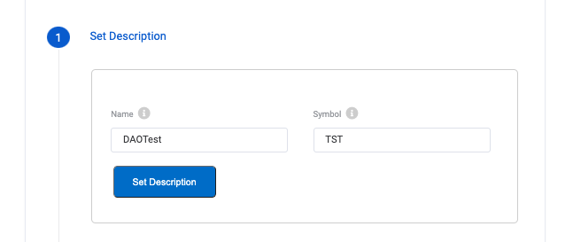
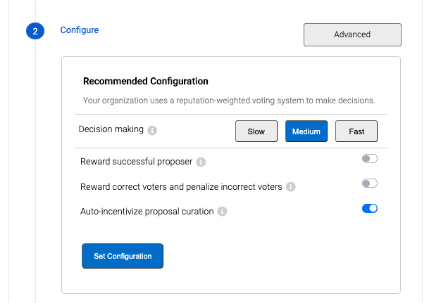
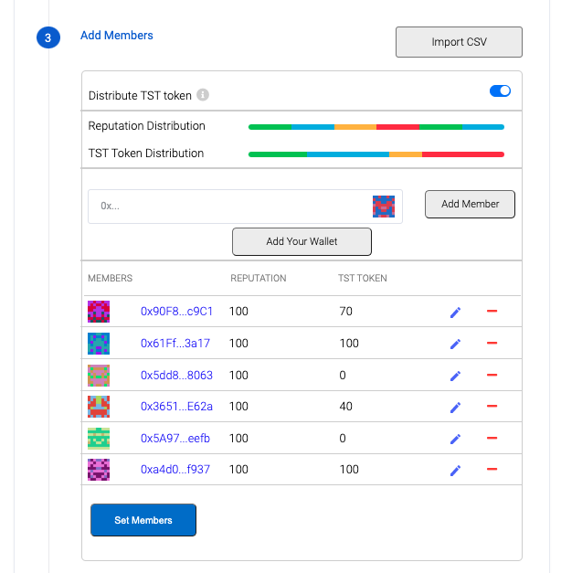

DAO creator
DAOcreator is a tool that allows you to deploy your DAO in a super simple way. It has a UI which you can find in Alchemy dApp
When you create a DAO, it create an instance of the multiple components defined in Arc
Deploying a DAO with this tool consists of three steps which are:
1- Setting the DAO name and symbol
2- Configure proposals parameters
3- Define the members of your organization
Let's go step by step and what every step does:
Setting the DAO name and symbol

In this section, you will set the DAO's name and the Token's symbol.
Configure proposals parameters

Here you will define the mechanics of the proposals, from here you can choose the amount of time allotted for votes to come to a close when it comes to making decisions. Choose “Slow”, “Medium”, or “Fast” depending on how long you want the voting periods to be. If you’d like to know how long each setting is, simply hover over the buttons to know how many days are given for each type of vote.
Then you can choose to add three options, which are:
- Reward successful proposer: If the proposal passes, the proposer will get a certain amount of REP
- Reward correct voters and penalize incorrect voters: If the proposal is boosted, the stakers that did the bet for the winning result will get a certain amount of REP
- Auto-incentivize proposal curation: When a proposal is created, the organization will bet agaisnt the proposal
If you are a experienced user in the stack the advanced configuration allows you to configure the voting mechanics as you desire. Please refer to Genesis Protocol documentation to know what the parameters are and what they do.
Define the members

Here you will be able to add the addresses of whichever members you would like to be a part of the DAO. You will be able to vote to add more members at a later date, but if you have their addresses now, it’s best to get that done now. Each member will be identified by their eth address, so make sure each one is inserted correctly.
Misc
Export/Import config
The DAOcreator allows you to import/export the entire configuration of your DAO. In case you already have your set up but want to send it to someone or wait for another address.

You can get the migration-params.json file from the Export configuration button.
Import members
On the Add members section, there is a button at the top right, that allows you to import a CSV with the members. You can check how to create this CSV in this example